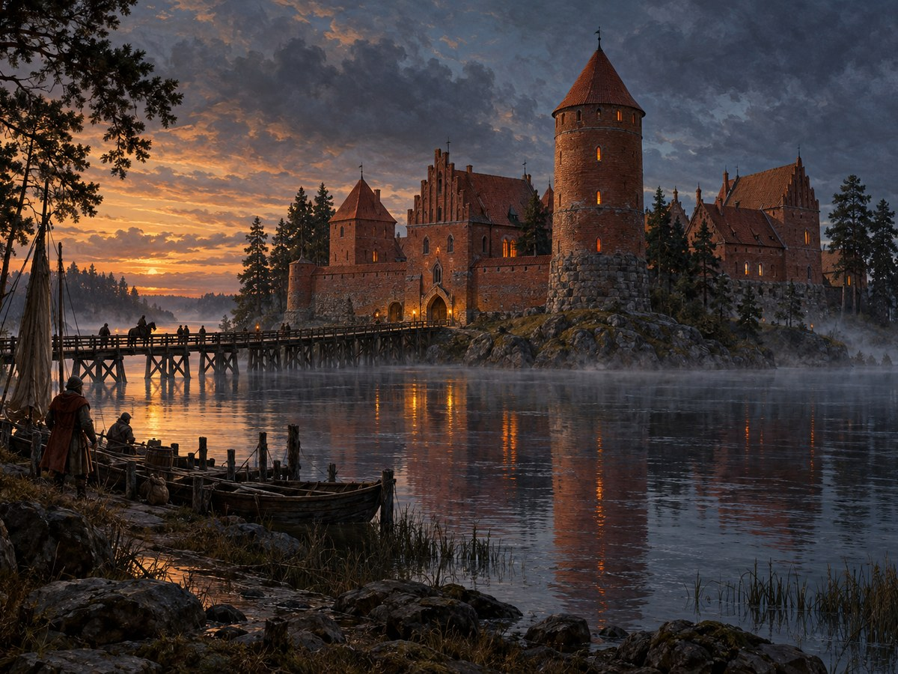

Trakai¶
In the 1380s [Historical record]¶
Trakai (“New” Trakai, Pol. Troki) was Kęstutis’s capital, on the neck of land between Lakes Galvė and Luka, with the older seat of Senieji Trakai a few kilometres east. Two castles stood here in the saga’s period. The Peninsula Castle, a brick-and-stone enclosure with towers, is dated to Kęstutis’s mid-14th-century building. The Island Castle on Lake Galvė was begun under Kęstutis in the second half of the 14th century; the Order’s attack of 1377 and the civil war of 1381-84 interrupted it, and the main works were completed under Vytautas around 1409 (an Order-trained mason is said to have supervised during a truce). Its walls were later thickened and a moat dug. Historians still argue about the early phases (Trakai History Museum; en.wikipedia, Trakai Island Castle).
Trakai fell to Jogaila and the Order on 20 July 1382; Skirgaila was made duke of Trakai (1382-92), and the Agreement of Ostrów (4 Aug 1392) restored the duchy to Vytautas. Tradition places the settling of Karaim families here in 1397-98, though the number is disputed. Ona died at Trakai on 31 July 1418; Vytautas died in the island castle on 27 October 1430; Žygimantas Kęstutaitis was murdered on 20 March 1440 at the Peninsula Castle, following the official heritage identification. Trakai became a voivodeship seat in 1413. Sources: VLE (Trakai, Skirgaila, Vytautas), en.wikipedia.
Trakai

Trakai · place¶
Type |
place |
Note |
Ancestral seat of Kęstutis and Vytautas; peninsula and island castles among the lakes. |
Sensory sketch¶
Water on three sides. Fog lifts off Galvė at dawn and wraps the towers; in summer the lakes smell of reeds, fish and warm mud, and gulls and swans move on the water. Before 1400, a working castle: wood smoke, tar, cattle and horses in the bailey. After 1400, hammering and the dry smell of lime, brick dust and kiln smoke from the island, where masons stacked red brick under scaffolds. Boat traffic, fishermen, the bells of Senieji Trakai. Winter closes the lakes with thick ice, sledge runners hiss across them, and the island castle can be reached on foot. Karaim and Tatar voices and horse markets appear after 1397.
In the saga¶
Trakai is the wolf’s lair: Kęstutis’s hall, Birutė’s tower shrine, and for Book I the last warm house before the arrest. Its mythic centre moves as the castles change. In 1387 the saga leaves the island as half-flooded foundations and an abandoned building site, where Vytautas hides the Last Flame in the lowest water-logged vault while Skirgaila holds the peninsula castle; a house-silence settles over Skirgaila’s Trakai. From 1392 the rising island castle houses the secret flame in its deepest vault until it goes out on 27 October 1430, the night Vytautas dies. Henė watches from an overturned boat on the south shore of Galvė; the Iron Wolf dissolves into mist above the Duke’s tower. In 1440 the murder of Žygimantas stains the same stones.
Getting there¶
Trakai is about 25 km west of Vilnius (28-32 km by road), half a day on horseback, one day on foot. To Krėva it is about 90 km (110-125 km by road), two and a half days on horse; the arrested Kęstutis reached it in roughly three. To Palanga it is 340-380 km, eight to ten days (four with relays). To Kaunas it is about 70 km in a straight line (85-90 km by road), two days by horse. In winter the lakes make a straight shortcut, but a sledge on river ice makes 40-60 km a day, so the lake is a stage, not a road. To Marienburg the Order’s envoys’ route from Vilnius (550-650 km) takes about two weeks.
Scenes set here¶
Book I ch. 1 Senasis Šernas (fog on Galvė, Peninsula Castle), ch. 2 (the arsenal), ch. 3 (Birutė’s shrine), ch. 4 (the road out), ch. 21 (the fog-bound fields); Book II ch. 1 Skirgailos Trakai, ch. 2 Salos Pamatai (the building site), ch. 11 Trakų raktai, ch. 18 Trakų naujakuriai, ch. 29 Pelenų Trakai (the island vault); Book III ch. 2, 8, 9, 28; Book IV ch. 9 (Ona’s death), 22, 25-30 (the fall, the death); Book V ch. 1, 4, 8, 18, 22 (the murder), 24; Book VI ch. 12 (Senieji Trakai), 16, 21, 30.
Relations
Events here: Birutė binds Vytautas (Sutartis, surety, flame promise) · Ona dies — Died at Trakai 31 Jul 1418; buried Vilnius cathedral. · Trakai granted to Skirgaila (1382-92) · Vytautas dies at Trakai; the Last Flame goes out · Žygimantas assassinated at Trakai
Ruled by: Skirgaila (1384–1392)
Timeline¶
Year |
Event |
Book |
|---|---|---|
1382 |
I · The Wolf’s Exile |
|
1382-07 |
I · The Wolf’s Exile |
|
1418-07-31 |
IV · The Invisible Crown |
|
1430-10-27 |
IV · The Invisible Crown |
|
1440-03-20 |
V · The Wolf’s Legacy |
Connections¶
graph LR
ev_ona_dies["Ona dies"]
ev_sutartis["Birutė binds Vytautas (Sutartis, surety, flame promise)"]
ev_trakai_to_skirgaila["Trakai granted to Skirgaila (1382-92)"]
ev_vytautas_dies["Vytautas dies at Trakai; the Last Flame goes out"]
ev_zygimantas_killed["Žygimantas assassinated at Trakai"]
skirgaila["Skirgaila"]
trakai["Trakai"]
skirgaila -->|Rules| trakai
ev_vytautas_dies -->|Location| trakai
ev_zygimantas_killed -->|Location| trakai
ev_sutartis -->|Location| trakai
ev_trakai_to_skirgaila -->|Location| trakai
ev_ona_dies -->|Location| trakai
style trakai stroke-width:3px